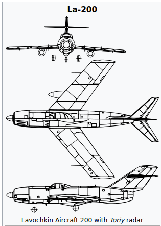

In response to a requirement for a high performance night and all-weather interceptor, Lavochkin (OKB-310),
Sukhoi (OKB-134) and Mikoyan-Gurevich (OKB-155) design bureau developed the La-200,
Su-15, and I-320 (where the I stands for Istrebitel, or "Fighter") respectively.
A key component of the three competing aircraft,
was the "Toriy" ("Thorium") centimetre waveband NII-17 radar
at Tikhomirnov NIIP - (NIIP for Nauchno-Issledovatel'skiy Institut Priborostroyeniya,
or "Research Institute of Instrument Engineering"),
which was capable of detecting a Boeing B-29
Superfortress bomber at a range of 20 km (12 mi).
The La-200 was an all-metal, two seater, twin-engined jet aircraft,
with a tricycle undercarriage and mid set wings with 40° sweep at 1/4 chord.
The two Klimov RD-45F centrifugal flow turbojet engines were to be fitted in tandem inside the
front and rear fuselage with the air intake at the extreme nose.
The forward engine exhausted under the centre fuselage
and the rear engine exhausted at the end of the rear fuselage.
Access to the engines for maintenance and removal was gained by removing the forward fuselage
forward of the nose undercarriage and the rear fuselage forward of the fin.
The main and nose undercarriages were housed entirely within the fuselage.
The nose undercarriage rotated 90° to lie flat under the forward engine,
and the twin wheeled main undercarriage legs,
with long travel levered suspension, retracted into the centre fuselage above
the forward jet pipe and astride the fuel tank and intake trunking for the rear engine.
The swept wings were of constant chord with 2/3 span flaps,
1/3 span ailerons, and wing fences at approximately 1/4 and 1/2 span. The tail unit comprised a sharply
swept broad chord tapered fin with a sharply swept tapered tailplane at 2/3 fin length.
The swept wings maximised the speed performance but imposed a higher wing loading than specified by the Soviet Air Force,
thus the RD-45F engines were replaced with Klimov VK-1 engines, (up-rated RD-45F's).
The "Toriy" radar was initially fitted in an ogival radome in the centre of the air intake.
.png)